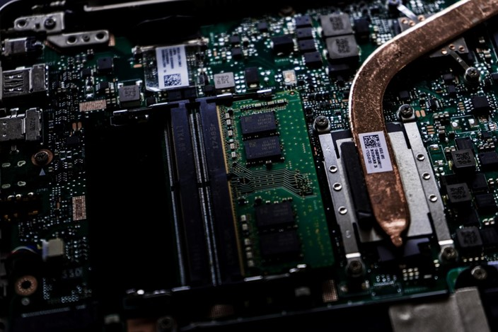
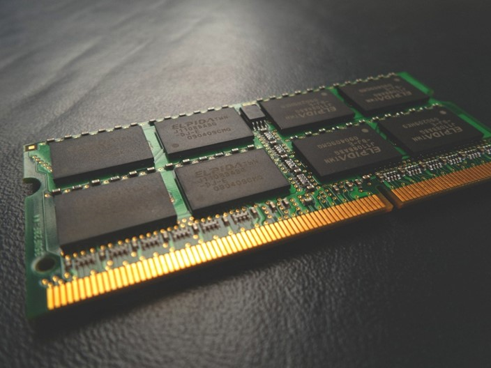
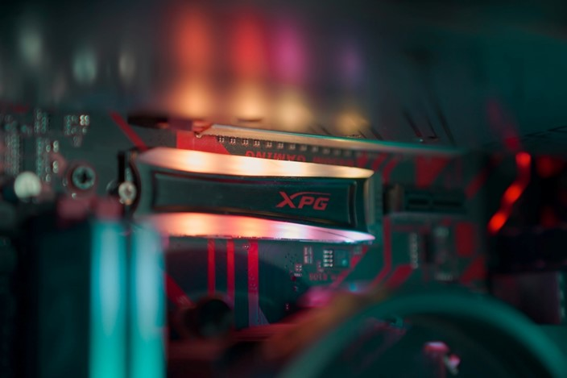

Escolher um notebook que tenha bom desempenho em jogos não é das tarefas mais fáceis, pois o equipamento já é disponibilizado com uma configuração padrão. No entanto, hoje em dia, há modelos específicos para atender a este nicho, o que pode facilitar a compra por parte dos usuários menos experientes.
De qualquer forma, algumas especificações precisam ser verificadas com mais atenção quando um notebook gamer está sendo analisado. Não seria uma boa ideia investir em um processador parrudo, se o resto do setup não estiver no mesmo nível de desempenho. A configuração do equipamento precisa ser equilibrada.
A seguir, daremos mais detalhes sobre as especificações que são os pontos chaves para a performance geral de um notebook gamer.


Processador

O processador é um principal componente de um computador.
O processador é o componente mais importante para o desempenho de um PC. Durante a execução de jogos, ele atua como limitador, mesmo em situações onde a placa de vídeo poderia ter rendimento superior. Chips mais recentes, a partir dos modelos Core i-5, são um bom ponto de partida.
Placa de vídeo

A placa de vídeo processa todas as imagens geradas em um PC.
A placa de vídeo é o componente responsável pelo processamento gráfico da máquina. Em um notebook essencialmente gamer, deve-se considerar uma configuração que tenha uma placa de vídeo dedicada. Modelos a partir da GeForce GTX 1050 já conseguem rodar jogos leves com qualidade aceitável.
Memória RAM

A memória RAM permite rodar vários apps ao mesmo tempo.
A memória RAM é muito importante para o desempenho geral do PC, pois é ela que torna a máquina capaz de rodar vários aplicativos ao mesmo tempo, sem que o computador comece a ficar lento. Dessa forma, você deve optar por notebooks com pelo menos 8 GB de RAM.
SSD e HD

De preferência, o sistema operacional deve ser instalado no SSD.
O dispositivo de armazenamento é onde ficam gravados os softwares e dados do PC, incluindo o sistema operacional e os jogos. Tenha em mente notebooks que tenham um SSD (ao menos para a instalação do sistema operacional) serão mais ágeis ao ligar e desligar, assim como para abrir aplicativos. Já os HDs são mais lentos, mas podem oferecer mais espaço para salvar arquivos.
Opções de notebooks gamer para você escolher o seu
Após checar as informações anteriores, você deve estar se perguntando "qual notebook gamer comprar?". Bem, selecionamos cinco opções de equipamentos dedicados para jogos, baseando-se nos critérios explicados acima. Agora, é só escolher o mais indicado para suas necessidades.
Veja Também Reviwes